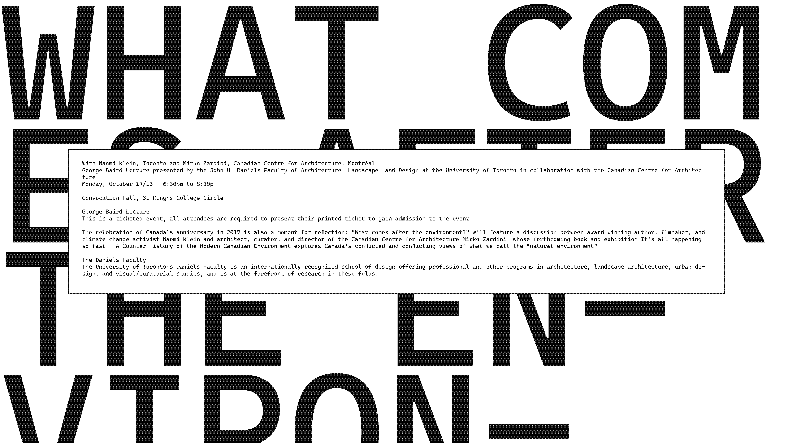
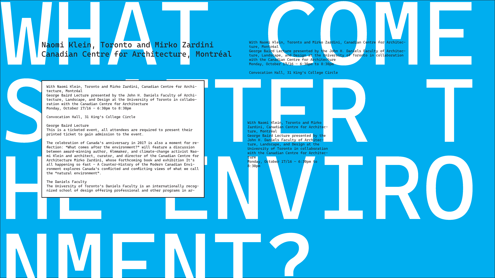
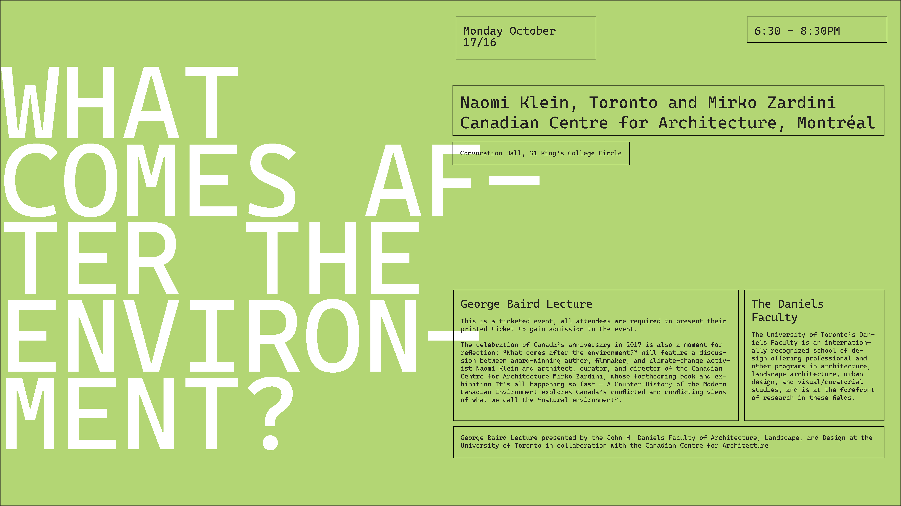
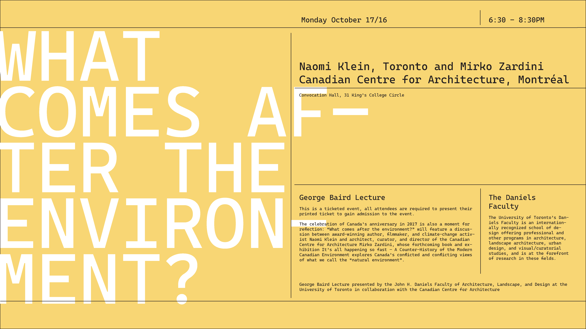
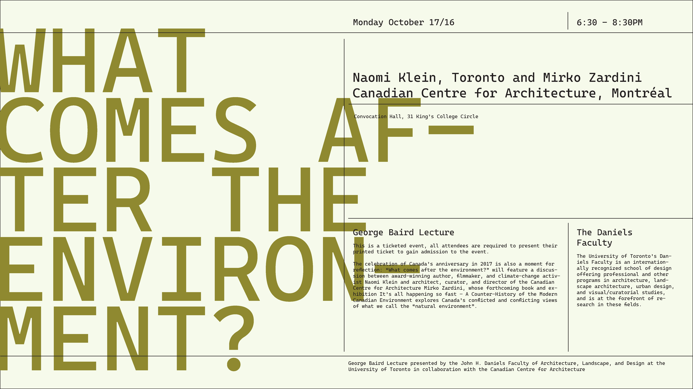
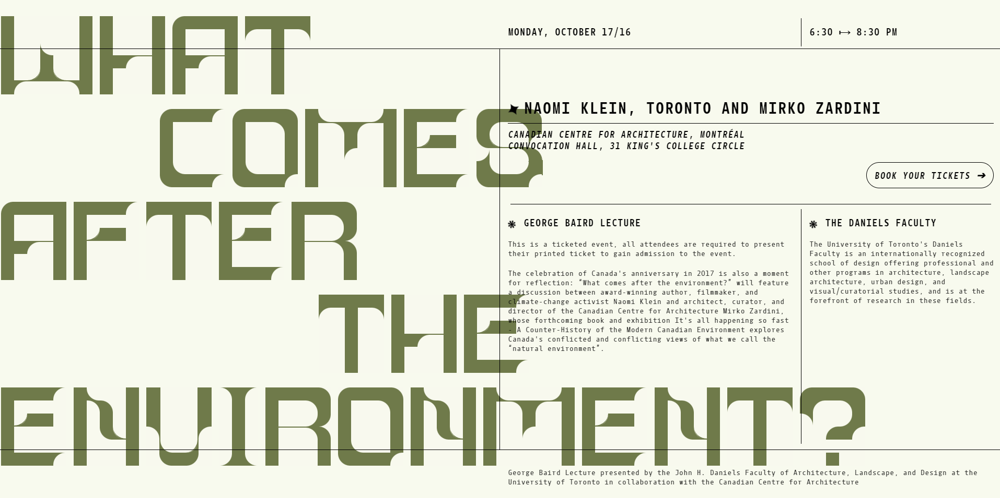

A2: CSS TYPOGRAPHIC POSTER
Click here to view the final site.
RESEARCH
I took a look at some of the typographic posters shown in class, as well as a couple others online for inspiration. I didn't create a moodboard this time, because I already had a pretty clear idea of what my final concept was going to look like.
CONCEPT
I decided to mock up the website in Indesign before moving on with the actual coding. I started with a widescreen base and played around with a couple of iterations until I found something I was pretty happy with. The feedback was very helpful as well, and helped me push the concept along a little better in practice.
    I settled with a design that was similar to the final iteration.
SKELETON

The first order of business was getting the underlying structure complete. This was pretty straightforward, actually; I just followed the Indesign mockup I created, and adjusted a CSS grid accordingly. I made divs for each element (date, time, title, paragraphs, etc...) and assigned them their proper place.
To create the grid lines, I used borders, and 'divider' divs with border-bottoms.
FIRST PASS

Next, I linked the stylesheet from assignment 1 and a nice monospace font. I placed each letter behind the grid to spell out the title, cleaned up the styling by adding padding, margins, header stylingm etc...
There were a couple of small issues still with alignment, so I had to sort that out and add a bit of interactivity.
FINAL PASS
I adjusted the colour of the background, and fixed some of the column widths to achieve the look I wanted. The background title felt a little awkward because of the way the letters fell, so I added some spacing and balanced the page out a bit better. I added a call to action button with a simple hover effect, and I created spinning divs for the little unicode symbols next to some of the headers.
On page load-in, I have a short animation where each word of the title fades in before the rest of the information. The title is more organic and the 'nature' part of my concept. I couldn't use animation-delay to delay any animations here because they were on load-in, which means that during the delay they would already be in their final positions, which looked off. So I just mapped different opacities to different times in the keyframes.
After the title appears, the rest of the info fades in in a similar fashion. I have a little hover effect over each letter in the title, but to allow those hover effects to work with the info grid over them, I set pointer-events to none on the grid, but re-added them to all the text so you could still highlight/copy-paste it.